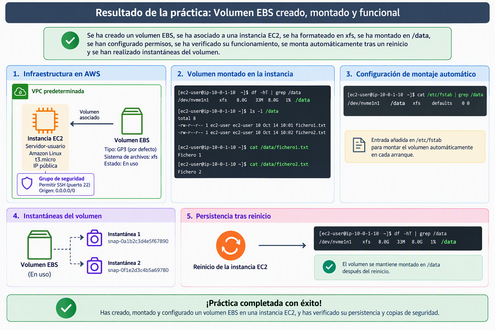

Práctica 1: Creación y montaje de un Volumen EBS
Vamos a realizar una práctica en la que trabajaremos con varias fases del ciclo de vida un disco EBS. crearemos una disco EBS que posteriormente agregaremos a una instancia EC2. Una vez vinculado el disco, le daremos formato y lo asociaremos a un punto de montaje. Modificaremos los permisos para que el usuario ec2-user tenga control completo sobre él. Una vez finalizada la operativa, modificaremos /etc/fstab para que el disco se monte automáticamente en cada arranque y haremos un par de instantáneas y restauraciones del disco. Esta práctica se hará toda en la consola de AWS.

Creación de instancia EC2
- Cree una instancia EC2 en la Región us-east-1:
- Nombre:
Servidor-$username - AMI: Amazon Linux más actual que sea Apta para la capa gratuita
- Instancia t3.micro
- Utiliza el par de claves vockey
- Establece la máquina EC2 en la VPC predeterminada. Sin preferencias en AZ y Subred.
- Asignación automática de IP pública: Habilitar
- Crea una regla de seguridad llamada Permitir SSH abriendo el puerto 22 a cualquier origen
- Deja el almacenamiento y el resto de parámetros por defecto y pulsa el botón Lanzar instancia.
Crear volumen EBS, asociarlo y montarlo
- Siguiendo el siguiente manual vamos a crear un volumen Amazon EBS desde la consola. Ignora los pasos 10 y 11 y posteriormente asocialo a la instancia EC2 creada en el paso 1.
- Una vez creado el volumen y asociado, sigue el siguiente manual para dar formato y montarlo en el sistema Amazon Linux. Haz que el sistema de archivos sea xfs y que el punto de montaje sea /data.
- Una vez tengamos la carpeta montada vamos a dar permisos al usuario actual para que pueda trabajar con la carpeta:
sudo chown -R $USER:$USER /data
chmod 750 /data
- Comprueba que puedes leer y escribir en la carpeta. Por ejemplo creando algunos ficheros de texto con comandos y luego leyéndolos. Ejemplo:
echo "Fichero 1" > /data/fichero1.txt
echo "Fichero 2" > /data/fichero2.txt
cat /data/fichero1.txt
-
Siguiendo los pasos del manual, haz que el dispositivo EBS se monte automáticamente después de un reinicio.
-
Reinicia la máquina EC2 y comprueba que el dispositivo está montado en la carpeta /data y que puedes leer y escribir en dicha carpeta.
Creación de instantáneas
-
Ahora vamos a realizar una instatánea del disco. Para ello detén la instancia EC2 y creamos la instatánea para ello puedes seguir el siguiente manual. Nombra a la instántanea como "Instántanea inicial".
-
Arrancamos de nuevo la máquina EC2 y una vez arrancada creamos ficheros nuevos en la carpeta
/datadonde se encuentra montado nuestra unidad EBS.
echo "Fichero 3" > /data/fichero4.txt
echo "Fichero 4" > /data/fichero4.txt
#Listamos los 4 ficheros que existen en /data
ls -l /data
-
Creamos una nueva instántanea que se llame "Segunda instántanea"
-
Una vez finalizada la instantánea arrancamos de nuevo la máquina EC2. Nos vamos a la carpeta /data y la vaciamos borrando todo el contenido que está dentro de ella.
# Añadiremos el parámetro -r si dentro de /data tenemos carpetas
rm /data/*
#Comprobamos que está vacía la carpeta
ls /data
Restauración de instantánea
Vamos a restaurar el volumen a partir de la instantánea. Para ello tenemos dos métodos:
-
Crear un nuevo volumen a partir de la instantánea y copiar el contenido al volumen actual.
-
Crear un nuevo volumen a partir de la instatánea y sustituir el disco EBS.
Vamos a utilizar el segundo método para restaurar la "Segunda instantanea". Para ello seguiremos el siguiente manual pero teniendo en cuenta lo siguiente.
Para poder desvincular el volumen desde la consola AWS, es necesario realizar el paso de desmontaje (paso d) en primer lugar. Recuerde que estamos sustituyendo un disco que no es raíz.
-
Una vez finalizada la sustitución de discos, monta el nuevo disco y comprueba que en data están los 4 fichero que creamos.
-
Comprueba si ha cambiado el blkid comparando el id del disco que nos da el comando
blkidcon el UUID que tenemos en/etc/fstab. Si ha cambiado, modifica fstab para que el nuevo volumen se remonte. -
Reinicia el sistema y comprueba que el nuevo volumen está montado.
¡Felicidades! Has finalizado la práctica.
Recuerda borrar todos los recursos creados para no consumir saldo de AWS